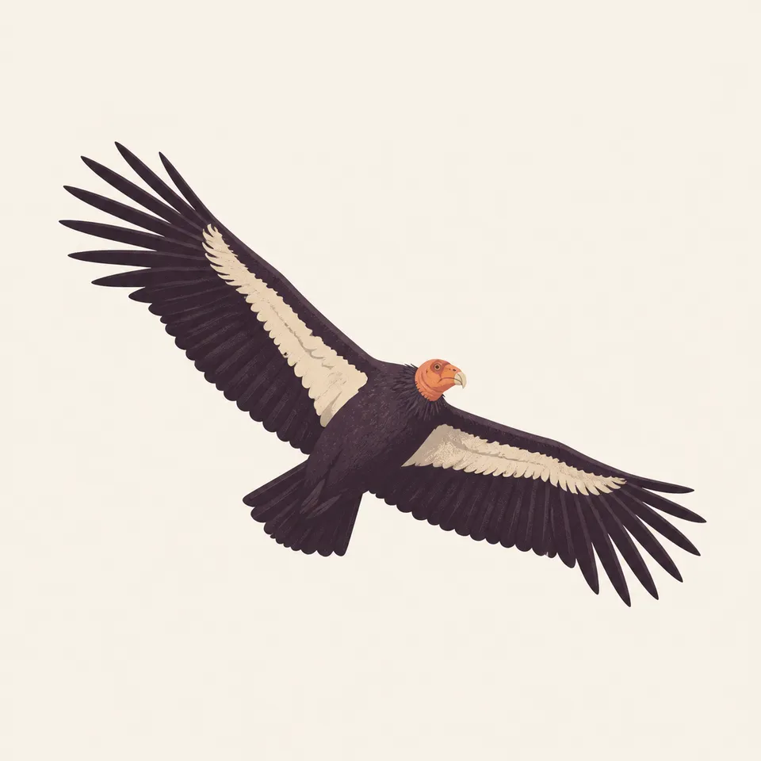
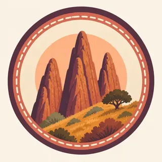

01
The Neenach connection
Breccia found here matches the Neenach Formation 195 miles southeast, evidence the Pinnacles rock is half of a single volcano the San Andreas Fault split and carried north.
TrailMark Archive Edition
California | Gabilan Range
A national monument on January 16, 1908, by Theodore Roosevelt. A national park on January 10, 2013.
Archive No. TM-PINN-055
National Park since 2013
Collection Neenach Volcano
Park Overview
President Theodore Roosevelt proclaimed Pinnacles National Monument on January 16, 1908. Congress redesignated it Pinnacles National Park on January 10, 2013.
The park protects 26,686 acres of spired volcanic rock, talus caves, and chaparral in the Gabilan Range. The formations here are believed to be part of the Neenach Volcano, which erupted about 23 million years ago near present-day Lancaster, roughly 195 miles southeast of the park.
Movement along the San Andreas Fault, at a right-lateral rate of about 0.59 inches per year, has carried the volcanic rock north over millions of years, splitting the original volcano; the fault itself now sits about 4 miles east of the park.
Emotional Thesis
The header painting sets warm rock spires against a dusk-orange sky above chaparral hills, a landscape that looks static but has traveled about 195 miles from where it formed. The rock is real evidence of the San Andreas Fault's slow, continuous motion.
Since 2003, Pinnacles has been a release site in the California Condor Recovery Program, one piece of an effort that brought the species back from the edge of extinction. The extra drawing, a condor in full soaring wingspan, is the archive's image of that recovery.
Landscape Highlights
01
Breccia found here matches the Neenach Formation 195 miles southeast, evidence the Pinnacles rock is half of a single volcano the San Andreas Fault split and carried north.
02
Boulders wedged between canyon walls form the park's rare talus caves, including Bear Gulch and Balconies, unlike the solution caves at Carlsbad or Mammoth.
03
A release site for the California Condor Recovery Program since 2003, working to rebuild a wild population of one of North America's most critically endangered birds.
Wildlife
Since 2003, Pinnacles has partnered with the U.S. Fish and Wildlife Service and Ventana Wildlife Society to release California condors, part of a broader recovery that brought wild condor numbers to 276 by 2017 after the species nearly went extinct. The extra drawing is a condor in flight, the archive's image of that recovery.

01
Lead poisoning, from lead ammunition fragments in carrion, remains a named ongoing threat to released condors.
02
Over 200 bird species have been documented in the park since 1908, condors among the most closely tracked.
03
Condor viewing is a matter of timing and luck; NPS provides dedicated viewing guidance rather than a guaranteed sighting location.
Geology
Rhyolitic magma and volcanic flows erupted here as part of the Neenach Volcano about 23 million years ago; the San Andreas Fault has since split that volcano and carried the Pinnacles half of it roughly 195 miles north.
01
The fault's right-lateral movement proceeds at about 0.59 inches per year, a slow but continuous rate over millions of years accounting for the full 195-mile separation.
02
The Chalone Creek Fault, parallel to the park's main drainage, is thought to preserve the San Andreas's former position from the Miocene eruption era.
03
Breccia, rhyolite, and fanglomerate are the rock types the park's geology page names as forming the current spires and caves.
Wildflowers bloom across the chaparral hillsides; temperatures are mild before summer heat sets in.
High heat is common in the Gabilan Range; caves and shaded canyons offer relief, and hiking is best done early.
Temperatures moderate again; a good season for the talus cave trails and condor viewing.
The mildest season for hiking the spires and caves, with occasional rain across the chaparral.
Photography
A rock spire alone could be any dry hillside. Wide sky above it, the kind a condor might cross, is what suggests this park's specific story.
01
A soaring condor, even distant, ties an image directly to the park's best-known conservation story.
02
A person or headlamp at a talus cave entrance shows the boulder-jammed scale that separates these caves from solution caves elsewhere.
03
Chaparral, not cactus, covers these hills; keep the specific vegetation in frame rather than implying a Southwest desert.
Field Notes
Half a volcano rode a fault line 195 miles to get here, and a bird nearly lost for good still circles above it.
TrailMark Field Notes

Badge Story
The badge fails if it reads as generic desert rock. The specific spire shapes against chaparral, with room for a condor overhead, are what claim this park.
Warm rust and gold rock against a dusk sky.
Chaparral shrubs and oaks at the base, not cactus.
Open sky above the spires leaves room for the condor story without requiring the bird on the mark itself.
Archive No.055
LocationGabilan Range
ReleaseSplit Volcano Mark
Stewardship / Safety
Talus caves can flood without warning; summer heat in the Gabilan Range is serious; and condors depend on visitors never approaching or feeding them.
Check current cave status before entering; some sections close seasonally for flooding or bat protection.
Carry water and avoid midday exertion in summer; the inland valley heat here is a real hazard.
Never approach or feed a condor; habituation to humans is a documented threat to the recovery program.
Pack out lead ammunition fragments are not the visitor's concern directly, but supporting non-lead ammunition regionally is part of the condor recovery effort NPS asks the public to know about.
Current conditions, fees, and alerts are on the National Park Service site.
Continue the Archive
Both parks release and monitor California condors as part of the same recovery program. Carlsbad Caverns, already open, is a solution cave for comparison against these boulder-jammed talus caves.